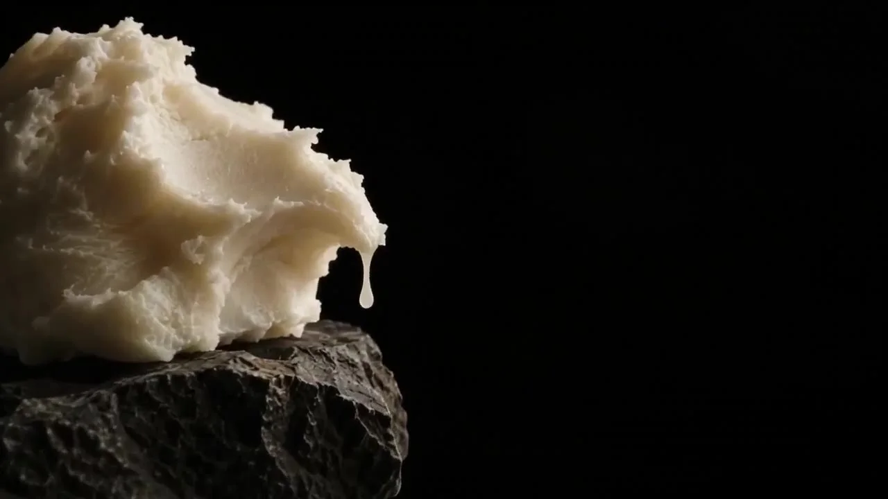

Βόειο στέαρ.
Η αρχέγονη λιπαρή βάση.
Μια πρώτη ύλη με μαλακτικό χαρακτήρα.


Πολύ πριν η περιποίηση γίνει βιομηχανία,
η φύση ήταν το πρώτο εργαστήριο.
Δεκάδες συστατικά. Πολύπλοκες ρουτίνες.
Υποσχέσεις για τα πάντα.
Βόειο στέαρ.
Μαστίχα Χίου.
Συνέχισε την κύλιση. Άφησε τα περιττά πίσω.

Δεν χρειάζεσαι 30 συστατικά επειδή είναι 30.
Χρειάζεσαι τα σωστά.
Η βάση της έμπνευσής μας.
Οι δύο πρωταγωνιστές της φιλοσοφίας μας ανήκουν σε μια σύνθεση πέντε συστατικών. Γνώρισε ολόκληρη τη σύνθεση.
Η αρχέγονη λιπαρή βάση.
Μια πρώτη ύλη με μαλακτικό χαρακτήρα.

Η δύναμη μιας ελληνικής ρητίνης.
Το συστατικό που ορίζει την ταυτότητά μας.
Μερικές φορές, εξέλιξη σημαίνει να αφαιρείς όσα δεν χρειάζονται.
Μπες στη λίστα αναμονής